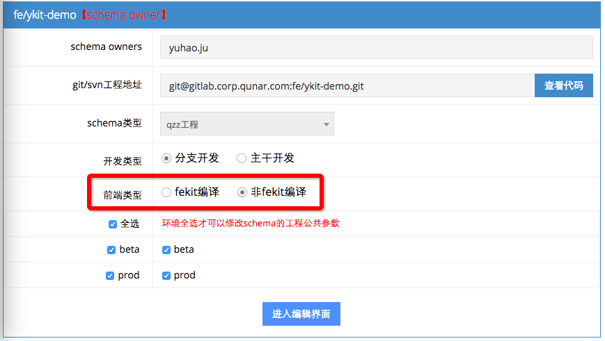
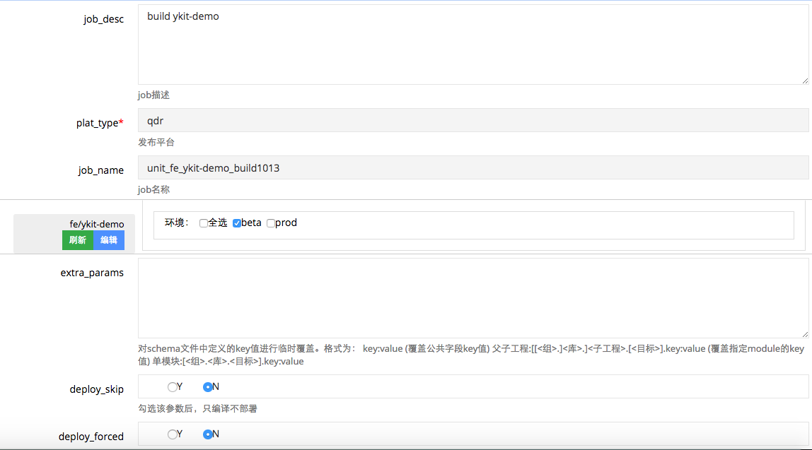

打包 JOB
创建 Schema
- 进入万事屋创建 Schema，注意前端类型选择
非 fekit 编译，其它项目信息正常填写即可。

- 进入 Schema 公共详细信息填写界面，在 build_command 字段填写以下打包命令：
npm install --production --registry http://registry.npm.corp.qunar.com/ && ykit reload && ykit pack -m -q
其它字段按项目需求填写，如无特殊需求可不填，submit 即可。
创建 Job
Ykit 对于创建 Job 并没有特殊的要求，按正常项目需求创建即可，下图是一个 demo 项目的 job 参数：

注意：Job 创建后需要手动添加 Job 的 devqa 权限才能在 Jenkins 中 Build.
Build 项目
Build 前检查
确保 pom.xml 里面的artifactId字段，已经从默认的******改为项目名称，并且当前分支不落后于 master。
关于 node_modules
- 确保项目中不存在 node_modules，或者 node_modules 是可兼容的。 由于 build 机器与本地的系统和 node 版本原因，有些 node_modules 包在 build 机器版本无法正常工作。因此建议使用 Ykit 的项目不要提交 node_modules，而是在 build 机器上安装（之前创建 Schema 时已经配置了安装命令）。
- 上面的安装命令中只会安装 dependencies，如果有编译过程中依赖了 devDependencies 中的包，则会报错。
开始 Build
在 Jenkins 刚刚创建的 Job 页面中，选择 Build with Parameters。如果是分支开发方式，需要在 tag_name 字段填写分支号，其它参数按项目需求填写即可。